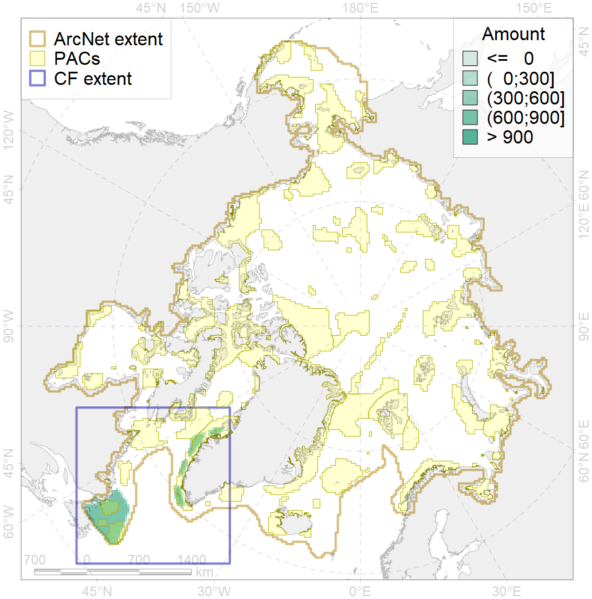
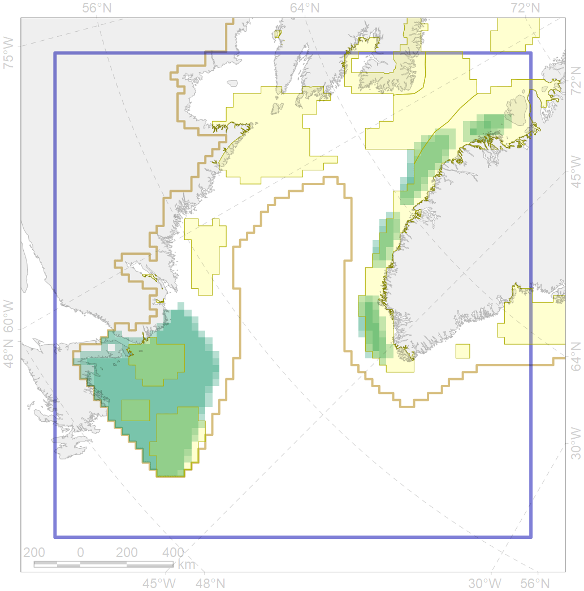

5050

| CF ID | 5050 |
| CF Name | Fin whale summer feeding areas in the Northwest Atlantic |
| Time Period | 1980-2012 |
| Source(s) | Edwards et al 2015; Christensen et al 2016 |
| Seasonality | June-September |
| Depth Horizon | 0-200 |
| Methodology | Various |
| Author Name | Filatova |
| Notes | |
| Conservation Target Set in the Scenario | 0.264 |
| Conservation Target Achieved in the Scenario | 0.499 (Scenario: 188.9%) |
| PAC ID | Proportion in the PAC | Contribution to ArcNet Target Achievement | PAC’s Contribution to the Achieved Target |
|---|---|---|---|
| 44 | 19.6% | 69.0% | 36.6% |
| 45 | 0.4% | 1.4% | 0.7% |
| 79 | 12.8% | 38.8% | 20.6% |
| 80 | 3.7% | 11.6% | 6.2% |
| 81 | 14.8% | 49.4% | 26.2% |
| inner | 51.4% | 170.3% | 90.2% |
| outer | 48.6% | 18.6% | 9.8% |